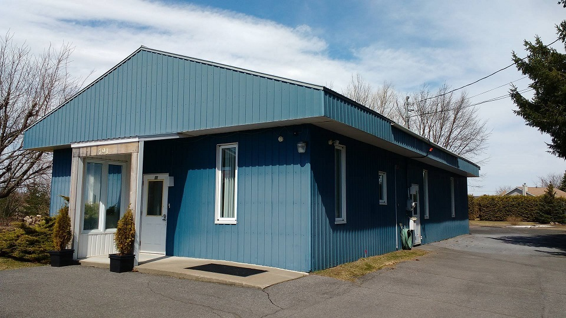

Centre d'Entraide Régional d'Henryville
Faites un don!
Le Centre d'entraide régional d'Henryville a besoin de votre
aide pour continuer d'offrir le plus de services possibles aux gens qui en ont besoin.
Nos réserves ont beaucoup baissé durant le Covid-19 et nous espérons pouvoir nous rendre jusqu'à la prochaine gignolée avec votre aide!
Le Centre d'entraide dessert 5 municipalités et aident des gens ayant des besoins particuliers.
Passez voir notre section "SERVICES" pour obtenir plus d'information sur la mission du centre.
Tous vos dons sont grandement appréciés!
A propos de nous
Fondé en 1994, le CERH est un organisme à but non lucratif.
Le centre offre de nombreux services aux habitants des communautés environnantes.
Les bureaux sont ouverts de 9h à 16h du Lundi au Vendredi
Notre clientèle cible sont les personnes âgées, en perte d'autonomie, en convalescence,
démunies physiquement,
économiquement temporaire et/ou monoparentale.
Nous desservons les municipalités de St-Sébastien, Henryville, Sabrevois, St-Alexandre et Venise-en-Québec.
En provenance de St-jean-sur-Richelieu:
• prendre la premiere sortie à droite tout de suite apres l'entreprise
F. Menard.
•Passé l'église, au coin de St-Jean-Baptiste, tournez à droite et
nous sommes à quelques maisons sur le côté droit.
En provenance de la route 35 (St-Sébastien):
•De la rte 133 tournez à gauche sur la rue St-Georges
Continuez tout droit sur ce qui devient St-Jean-Baptiste
au lieu
de suivre St-Georges.
•Continuez passé l'arrêt et le centre est
situé sur votre droite.